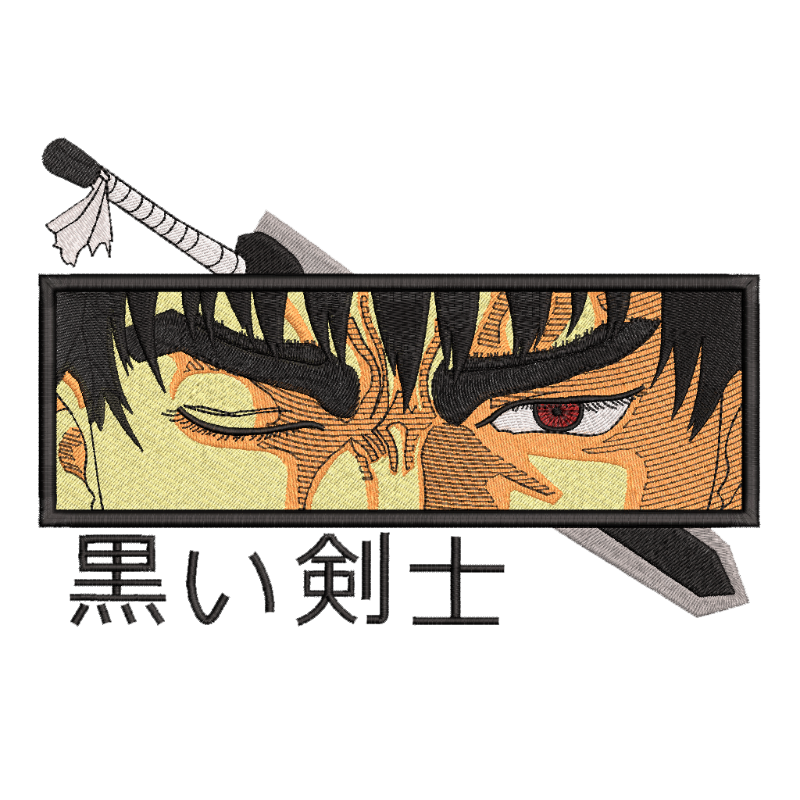
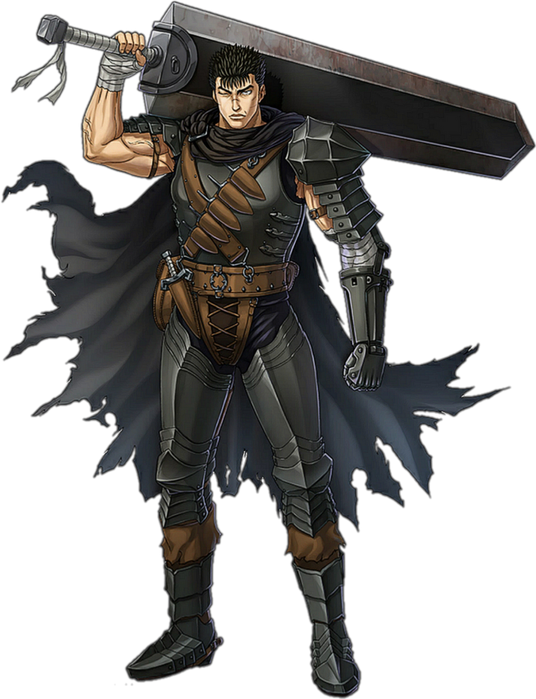
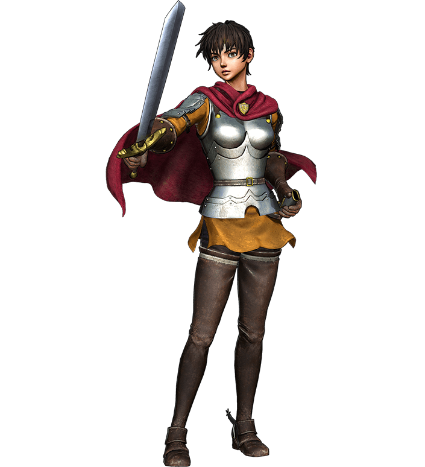
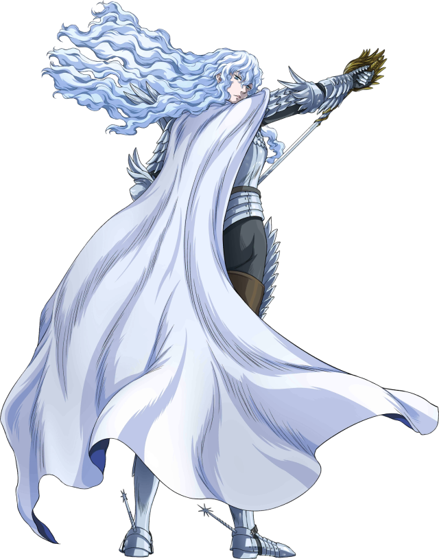
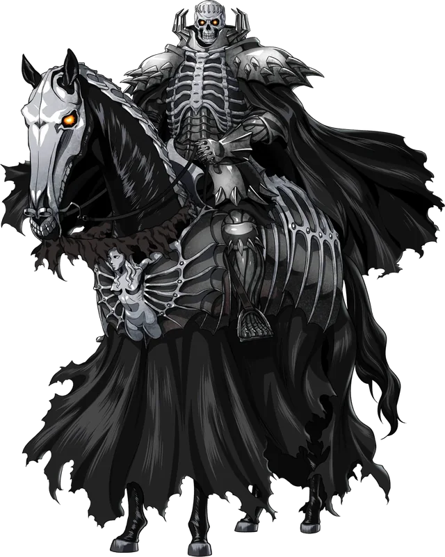

"Dreams. Each man longs to pursue his dream. Each man is tortured by this dream, but the dream gives meaning to his life. Even if the dream ruins his life, man cannot allow himself to leave it behind. In this world, is man ever able to possess anything more solid, than a dream?"





“Take heed struggler, you were born from a corpse and began your life from death in the mud! You are closer to death than anyone. Thus you excel in escaping it.”
— The Skull Knight
Sign up and stay updated on the latest news about the Berserk adaptation.